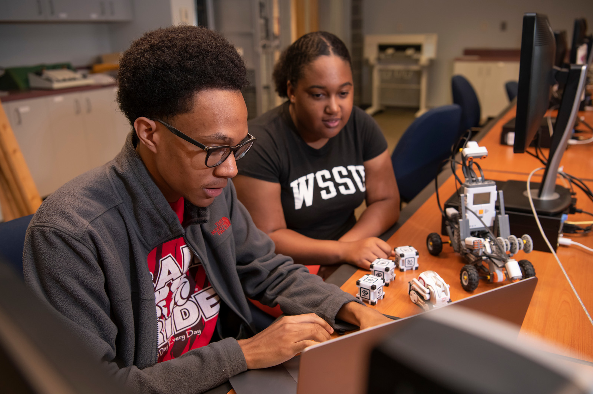

Centralized recruitment and application for Forsyth County & Winston-Salem students.
WSSU Bridge2CS Student Portal
Explore Computer Science Opportunities with Bridge2CS
Bridge2CS helps Forsyth County and Winston-Salem students build confidence in technology through mentorship, STEM exploration, scholarship and pathway support, and a strong student community at Winston-Salem State University.
Discover what makes our program a great place to start your journey in tech.

🚀
98% Career Placement
Graduates are employed or in graduate school within 6 months.
🎓
Accelerated 4+1 Degree Program
Earn both your bachelor’s and master’s degrees in just 5 years through our accelerated BS-to-MS pathway.
📚
ABET-Accredited Program
Accredited by ABET, ensuring a high-quality, industry-recognized education.
💻
Hands-On Learning
Work on real-world projects using modern tools and technologies.
🔐
Specialized Pathways
Explore cybersecurity, networking, AI, and high-performance computing.
🤝
Strong Support System
Receive mentorship, academic support, and career guidance.
🌍
Inclusive Community
Join a diverse and supportive STEM environment.
⭐
Bridge2CS Advantage
Get early access to resources, preparation, and guidance.
Program Goals
Expand access for first-generation and underrepresented students
Build computer science awareness through guided exploration
Connect students to mentors, resources, and supportive peers
Support students through scholarship and college pathway planning
Help students transition from high school to college with confidence
Hear From Current Students
Real student voices from our department community.
NM
Na'Shayla M.
"This department has helped me realize that I belong here, and it's strengthened my passion for technology. Faculty gave me practical advice on projects and internships, and I gained confidence speaking up in team settings."
DB
Dylan B.
"The support system here is real. I came in unsure about coding, but tutoring, office hours, and peer study groups helped me build strong fundamentals and stay motivated."
MJ
McCall J.
"I've learned how to turn data into real decisions through hands-on assignments. Professors connected class topics to real-world problems, which made me excited about analytics careers."
AP
Anderson P.
"The department gave me early exposure to cybersecurity labs and networking tools. I feel more confident and prepared for certifications and internships because of the guidance I received."
MS
Montrell S.
"What I value most is the community. Classmates and mentors pushed me to keep improving, and now I feel ready to pursue bigger opportunities in software and research."
Eligibility Filter
Only students from Forsyth County / Winston-Salem ZIP codes can apply. Enter your ZIP to check eligibility before completing the form.
Student Application Form
Simplified to reduce incomplete applications and speed conversion.
Saved drafts are intended for short-term continuation (about 30 days).
What Happens Next?
After you apply, here is what to expect from our team.
Step 1: Submit your application
Complete the form and submit your information through the student portal.
Step 2: Our team reviews your information
We review your application details and identify next-step support opportunities.
Step 3: Watch your email for updates
Check your inbox regularly for status updates, guidance, and next steps.
Financial Eligibility Check
Use this FAFSA-based estimator to get a quick idea of potential program financial support eligibility.
This is only an estimator and not an official financial aid determination.